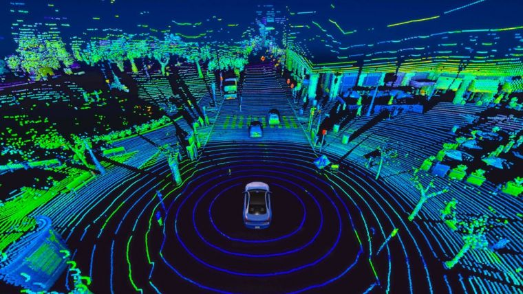

Overview
Simultaneous Localization and Mapping (SLAM) is a critical technology in the field of autonomous vehicles and robotics. SLAM algorithms enable vehicles to build accurate 3D maps of their environment while simultaneously tracking their own position within it. This process relies on sensor fusion, combining inputs from devices like LiDAR, cameras, IMUs (Inertial Measurement Units), and GPS to create highly detailed and accurate representations of the surroundings in real time.
The ability to generate real-time 3D maps is essential for autonomous vehicles to navigate complex and dynamic environments. SLAM enables vehicles to operate in unfamiliar or GPS-denied areas by creating their own map and continuously updating it as they move.

Technologies Behind SLAM
The effectiveness of SLAM depends heavily on the integration of various technologies. Below are some of the core components used to implement SLAM algorithms:
LiDAR Sensors: LiDAR (Light Detection and Ranging) is a key component for generating 3D maps. It uses laser beams to measure distances and create point clouds that represent the geometry of the environment.
Cameras: Cameras provide visual information that can be combined with LiDAR data to enhance map accuracy, allowing for feature detection and depth estimation.
IMUs (Inertial Measurement Units): IMUs are used to track vehicle motion by measuring accelerations and rotational rates, providing valuable information for vehicle localization and motion estimation.
GPS: In open environments, GPS provides an absolute reference for positioning, which helps in reducing errors in localization and improving map accuracy.
Sensor Fusion: The combination of data from these different sensors helps to overcome the individual limitations of each sensor, providing a more accurate and robust solution for real-time 3D mapping.
SLAM algorithms often combine these technologies through various mathematical models and optimization techniques to generate a 3D map while simultaneously estimating the vehicle’s position. The sensor data is fused to minimize errors and provide continuous updates to the map.
SLAM Algorithms
SLAM algorithms are the heart of 3D map generation. There are several types of SLAM algorithms, each optimized for different use cases and environments. Some of the key algorithms include:
EKF-SLAM (Extended Kalman Filter SLAM): A popular algorithm for real-time SLAM that uses a Kalman filter to estimate the vehicle’s position and map the environment simultaneously. It’s suitable for systems with relatively low computational power and relatively small environments.
Graph-based SLAM: This approach constructs a graph where nodes represent robot poses and edges represent spatial constraints between them. Optimization techniques, such as pose graph optimization, are used to improve the map accuracy.
FastSLAM: FastSLAM uses a particle filter to estimate the vehicle’s position and a set of individual maps for each particle. This method is well-suited for large environments and can handle more complex scenarios.
ORB-SLAM: A feature-based SLAM algorithm that uses visual information from cameras to detect features and build a 3D map. ORB-SLAM is robust to both indoor and outdoor environments and is known for its high accuracy.
Each of these algorithms uses different methods for optimizing the localization and mapping process. The choice of algorithm depends on factors like computational resources, environment complexity, and required accuracy.
Applications of SLAM in Autonomous Vehicles
Real-time 3D map generation through SLAM has a wide range of applications in autonomous vehicles. Some of the most impactful uses include:
Autonomous Navigation: SLAM provides real-time updates of the vehicle's surroundings, allowing it to navigate without relying on pre-existing maps or GPS signals.
Obstacle Detection and Avoidance: By generating accurate 3D maps, SLAM helps detect obstacles, including moving objects, and allows for safe navigation in complex environments.
Simultaneous Localization in GPS-Denied Areas: SLAM is essential in environments where GPS signals are weak or unavailable, such as tunnels, indoor spaces, or urban canyons.
Path Planning: With real-time mapping, SLAM enables efficient path planning, ensuring that the vehicle chooses the most optimal and safest route based on the dynamic environment.
These applications significantly improve the safety, efficiency, and reliability of autonomous vehicles, enabling them to operate safely in diverse and unpredictable environments.
Benefits of Real-time 3D Map Generation using SLAM
Real-time 3D map generation with SLAM offers numerous advantages, especially for autonomous vehicles operating in dynamic and unknown environments:
Improved Navigation Accuracy: By constantly updating the vehicle’s map and location, SLAM provides highly accurate navigation, even in environments without GPS signals.
Increased Safety: Real-time mapping allows vehicles to identify hazards, obstacles, and other potential risks, ensuring safer operation in both known and unknown areas.
Scalability: SLAM algorithms can be scaled to handle larger environments, making them suitable for a wide range of applications, from urban areas to off-road terrains.
Reduced Dependency on Pre-built Maps: Unlike traditional systems that rely on pre-loaded maps, SLAM enables autonomous vehicles to create and update their maps in real-time, making them more adaptable and resilient.